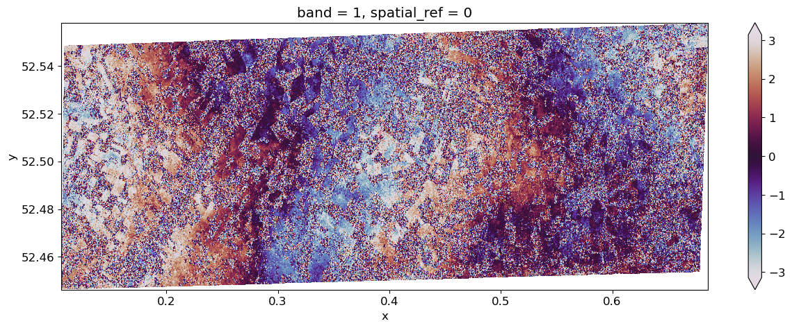
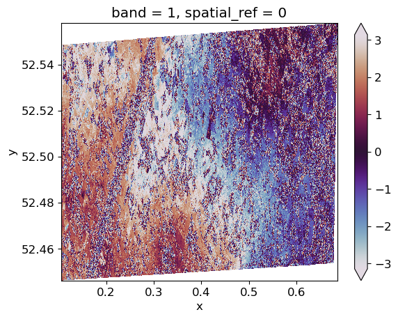

## Setup
conda env reqts
auth reqtsCalculating Coherence
A presentation to JNCC’s EO Implementation Group
Alastair Graham
Freelancer, currently under contract to Oxidian (https://www.oxidian.com) for delivery of tools around the EODH (https://eodatahub.org.uk/) platform.
You can find me on LinkedIn.
Outline
- Hi there
- Requirement to calculate coherence
- Available tools
- Intro to eo-tools
- Using data from the CDSE
- Using data from CEDA
- Outputs and Issues
- Possibilities on EODH
The requirement
As part of the EO Data Hub (EODH) project I contacted Paula at JNCC to discuss potential needs for the platform and the tools being developed. Coherence was mentioned as a topic of interest so I spent some time looking into this.
What is coherence and why is it useful?
SAR Coherence refers to a measure of similarity between two Synthetic Aperture Radar (SAR) images acquired over the same area at different times.
It is a key parameter in SAR interferometry (InSAR) and coherence analysis, providing insights into changes or stability within the observed area.
SAR coherence is mathematically defined as the normalized cross-correlation of the complex SAR signals from two images. The coherence depends on factors such as changes in the scene between the acquisition dates (temporal decorrelation), differences in the imaging geometry and the noise inherent to the SAR system.
Why SAR Coherence is Useful in Habitat Analysis
SAR coherence provides valuable information for habitat monitoring and analysis. Its usefulness stems from its sensitivity to changes in the structure, moisture, and composition of vegetation, soil, and other ground surfaces. This is dependant on the imaging system collecting the data.
- Detecting Change and Stability:
- Areas with low coherence often indicate changes such as vegetation growth, deforestation, flooding, or urban development.
- In habitats, it can help identify seasonal changes, disturbances, or degradation over time.
- High coherence suggests minimal change, useful for identifying stable habitats or regions of consistent land cover .
- Mapping Vegetation Dynamics:
- Linked to (1): Temporal coherence variations correlate with vegetation density and structure, providing insights into biomass estimation and forest health.
- Differentiating Land Covers:
- Different land cover types (e.g., forests, wetlands, grasslands) exhibit characteristic coherence signatures due to their unique scattering properties.
- Flood and Wetland Monitoring:
- Coherence can be used to monitor hydrological changes in wetlands and floodplains, as water surfaces cause a significant reduction in coherence.
SAR coherence serves as a powerful tool in remote sensing for understanding and managing ecosystems.
Available tools
(and more importantly, ones we can use)
The EODH link meant that we needed open tooling. There are commercial software packages that can calculate coherence but they are expensive and generally graphical in nature. I was also looking for CLI tools.
- SNAP Graph Processing Tool (GPT)
- GPT is the command-line powerhouse of ESA SNAP, enabling efficient, large-scale processing workflows tailored for remote sensing and SAR applications. It’s essential for automating and scaling tasks that would otherwise be tedious in the GUI.
- Workflows are written in XML files that describe the sequence of operations.
- Powerful and scalable, and suitable for HPC clusters.
- PyGMTSAR
- Advanced InSAR analysis for researchers, requiring technical expertise.
- A Python-based extension of GMTSAR (Generic Mapping Tools for SAR), focused on SAR interferometry and deformation analysis.
- Automates and streamlines workflows for interferogram generation, coherence analysis, and time-series analysis.
- Less user-friendly for beginners; requires familiarity with Linux and command-line tools.
- eo-tools
- Lightweight and flexible, ideal for developers working in Python with cloud or custom workflows.
- Designed for flexibility in handling EO data from diverse sources.
- Scalable for use in cloud or local environments
- Simple and efficient for batch processing or integrating SAR data into larger workflows.
- Highly customizable for developers.
- Lacks some advanced features for SAR interferometry.
Introduction to eo-tools
eo-tools is a relatively new Python package
Walk through
This demo is based on the how-to on the eo-tools website. There are a couple of bits that have been reworked or added to.
from itertools import combinations
import eo_tools
import geopandas as gpd
import matplotlib.pyplot as plt
import rioxarray as riox
#import shapely
from eo_tools.S1.process import process_insar
from eodag import EODataAccessGateway
from shapely.geometry import shape
# credentials need to be stored in the following file (see EODAG docs)
confpath = "~/.config/eodag/eodag.yml"
dag = EODataAccessGateway()
# make sure cop_dataspace will be used
dag.set_preferred_provider("cop_dataspace")
#logging.basicConfig(level=logging.INFO)# Set download dirs
data_dir = "~/Downloads/jncc_eotools" # set this to work for you
# example AOI around Thetford
file_aoi = f"{data_dir}/thetfordaoi.geojson"
shp2 = gpd.read_file(file_aoi).geometry[0]# Calculate bbox
xmin, ymin, xmax, ymax = shp2.bounds
bbox = {
"lonmin": xmin,
"latmin": ymin,
"lonmax": xmax,
"latmax": ymax
}
print(bbox){'lonmin': 0.105734423810487, 'latmin': 52.44639077957711, 'lonmax': 0.685652665706907, 'latmax': 52.55804798614935}# Run search
#bbox = {
# "lonmin": 0.08905898091569497,
# "latmin": 52.15527412683906,
# "lonmax": 0.9565339502005088,
# "latmax": 52.69722175598818,
#}
#shp = shapely.box(bbox["lonmin"], bbox["latmin"], bbox["lonmax"], bbox["latmax"])
search_criteria = {
"productType": "S1_SAR_SLC",
"start": "2023-09-03",
"end": "2023-09-17",
"geom": bbox,
}
results, _ = dag.search(**search_criteria)
eo_tools.util.explore_products(results, shp2)Make this Notebook Trusted to load map: File -> Trust Notebook
# Find overlaps
data = []
for item in results:
id = item.properties["id"]
geom = shape(item.geometry)
data.append({"id": id, "geometry": geom})
gdf = gpd.GeoDataFrame(data, crs="EPSG:4326") # Assuming WGS84
# 98% overlap
threshold = 0.98
overlaps = []
for (idx1, row1), (idx2, row2) in combinations(gdf.iterrows(), 2):
intersection = row1["geometry"].intersection(row2["geometry"])
if not intersection.is_empty:
# Calculate overlap ratio as the area of intersection divided by the area of the smaller polygon
overlap_ratio = intersection.area / min(
row1["geometry"].area, row2["geometry"].area
)
if overlap_ratio >= threshold:
overlaps.append((row1["id"], row2["id"], overlap_ratio))
overlap_ids = [entry[:-1] for entry in overlaps]
overlap_ids[('S1A_IW_SLC__1SDV_20230904T174209_20230904T174236_050181_060A2D_E88F',
'S1A_IW_SLC__1SDV_20230916T174209_20230916T174236_050356_061016_8033')]Using CDSE
# Data from CDSE
ids = ["S1A_IW_SLC__1SDV_20230904T174209_20230904T174236_050181_060A2D_E88F",
"S1A_IW_SLC__1SDV_20230916T174209_20230916T174236_050356_061016_8033"
]
primary_dir = f"{data_dir}/{ids[0]}.zip"
secondary_dir = f"{data_dir}/{ids[1]}.zip"
outputs_prefix = f"{data_dir}/res/test-full-processor"# Download overlapping products
# Only run if you need the data. Files are 8GB and downloading is usually throttled.
to_dl = [it for it in results if it.properties["id"] in ids]
print(f"{len(to_dl)} products to download")
dag.download_all(to_dl, outputs_prefix=data_dir, extract=False)2 products to download['/home/al/Documents/EODH/Code/eodh-tests/jncc/~/Downloads/jncc_eotools/S1A_IW_SLC__1SDV_20230904T174209_20230904T174236_050181_060A2D_E88F.zip',
'/home/al/Documents/EODH/Code/eodh-tests/jncc/~/Downloads/jncc_eotools/S1A_IW_SLC__1SDV_20230916T174209_20230916T174236_050356_061016_8033.zip']out_dir = process_insar(
dir_prm=primary_dir,
dir_sec=secondary_dir,
outputs_prefix=outputs_prefix,
aoi_name=None,
shp=shp2,
pol="vv",
subswaths=["IW1", "IW2", "IW3"],
write_coherence=True,
write_interferogram=True,
write_primary_amplitude=True,
write_secondary_amplitude=False,
apply_fast_esd=True,
dem_upsampling=1.8,
dem_force_download=False,
dem_buffer_arc_sec=40,
boxcar_coherence=[3, 3],
filter_ifg=True,
multilook=[1, 4],
warp_kernel="bicubic",
clip_to_shape=True,
)INFO:eo_tools.S1.process:---- Processing subswath IW1 in VV polarization
INFO:eo_tools.S1.core:S1IWSwath Initialization:
INFO:eo_tools.S1.core:- Read metadata file /home/al/Downloads/eotools/S1A_IW_SLC__1SDV_20241016T174206_20241016T174233_056131_06DE72_1B0C.zip/S1A_IW_SLC__1SDV_20241016T174206_20241016T174233_056131_06DE72_1B0C.SAFE/annotation/s1a-iw1-slc-vv-20241016t174207-20241016t174232-056131-06de72-004.xml
INFO:eo_tools.S1.core:- Read calibration file /home/al/Downloads/eotools/S1A_IW_SLC__1SDV_20241016T174206_20241016T174233_056131_06DE72_1B0C.zip/S1A_IW_SLC__1SDV_20241016T174206_20241016T174233_056131_06DE72_1B0C.SAFE/annotation/calibration/calibration-s1a-iw1-slc-vv-20241016t174207-20241016t174232-056131-06de72-004.xml
INFO:eo_tools.S1.core:- Set up raster path zip:///home/al/Downloads/eotools/S1A_IW_SLC__1SDV_20241016T174206_20241016T174233_056131_06DE72_1B0C.zip/S1A_IW_SLC__1SDV_20241016T174206_20241016T174233_056131_06DE72_1B0C.SAFE/measurement/s1a-iw1-slc-vv-20241016t174207-20241016t174232-056131-06de72-004.tiff
INFO:eo_tools.S1.core:- Look for available OSV (Orbit State Vectors)
INFO:pyroSAR.S1.auxil:searching for new POE files
INFO:pyroSAR.S1.auxil:https://step.esa.int/auxdata/orbits/Sentinel-1/POEORB/S1A/2024/09/
INFO:pyroSAR.S1.auxil:https://step.esa.int/auxdata/orbits/Sentinel-1/POEORB/S1A/2024/10/
INFO:pyroSAR.S1.auxil:found 1 results
INFO:pyroSAR.S1.auxil:downloading 1 file
INFO:pyroSAR.S1.auxil:deleting 0 RES files
INFO:eo_tools.S1.core:-- Precise orbit found
INFO:eo_tools.S1.core:S1IWSwath Initialization:
INFO:eo_tools.S1.core:- Read metadata file /home/al/Downloads/eotools/S1A_IW_SLC__1SDV_20241028T174206_20241028T174233_056306_06E564_F046.zip/S1A_IW_SLC__1SDV_20241028T174206_20241028T174233_056306_06E564_F046.SAFE/annotation/s1a-iw1-slc-vv-20241028t174207-20241028t174232-056306-06e564-004.xml
INFO:eo_tools.S1.core:- Read calibration file /home/al/Downloads/eotools/S1A_IW_SLC__1SDV_20241028T174206_20241028T174233_056306_06E564_F046.zip/S1A_IW_SLC__1SDV_20241028T174206_20241028T174233_056306_06E564_F046.SAFE/annotation/calibration/calibration-s1a-iw1-slc-vv-20241028t174207-20241028t174232-056306-06e564-004.xml
INFO:eo_tools.S1.core:- Set up raster path zip:///home/al/Downloads/eotools/S1A_IW_SLC__1SDV_20241028T174206_20241028T174233_056306_06E564_F046.zip/S1A_IW_SLC__1SDV_20241028T174206_20241028T174233_056306_06E564_F046.SAFE/measurement/s1a-iw1-slc-vv-20241028t174207-20241028t174232-056306-06e564-004.tiff
INFO:eo_tools.S1.core:- Look for available OSV (Orbit State Vectors)
INFO:pyroSAR.S1.auxil:searching for new POE files
INFO:pyroSAR.S1.auxil:https://step.esa.int/auxdata/orbits/Sentinel-1/POEORB/S1A/2024/09/
INFO:pyroSAR.S1.auxil:https://step.esa.int/auxdata/orbits/Sentinel-1/POEORB/S1A/2024/10/
INFO:pyroSAR.S1.auxil:found 1 results
INFO:pyroSAR.S1.auxil:downloading 1 file
INFO:pyroSAR.S1.auxil:deleting 0 RES files
INFO:eo_tools.S1.core:-- Precise orbit found
INFO:eo_tools.dem:Retrieve DEM
INFO:eo_tools.dem:Resample DEM
INFO:eo_tools.S1.process:---- Processing burst 3 ----
INFO:eo_tools.S1.core:Extract DEM coordinates
INFO:eo_tools.S1.core:Convert latitude, longitude & altitude to ECEF x, y & z
INFO:eo_tools.S1.core:Interpolate orbit
INFO:eo_tools.S1.core:Range-Doppler terrain correction (LUT computation)
INFO:eo_tools.S1.core:Extract DEM coordinates
INFO:eo_tools.S1.core:Convert latitude, longitude & altitude to ECEF x, y & z
INFO:eo_tools.S1.core:Interpolate orbit
INFO:eo_tools.S1.core:Range-Doppler terrain correction (LUT computation)
INFO:eo_tools.S1.core:Compute beta nought calibration factor.
INFO:eo_tools.S1.core:Compute beta nought calibration factor.
INFO:eo_tools.S1.process:Apply calibration factor
INFO:eo_tools.S1.core:Compute TOPS deramping phase
INFO:eo_tools.S1.process:Apply phase deramping
INFO:eo_tools.S1.core:Project secondary coordinates to primary grid.
INFO:eo_tools.S1.core:Warp secondary to primary geometry.
INFO:eo_tools.S1.core:Warp secondary to primary geometry.
INFO:eo_tools.S1.process:Apply phase reramping
INFO:eo_tools.S1.core:Compute topographic phase
INFO:eo_tools.S1.core:Compute topographic phase
INFO:eo_tools.S1.process:Apply topographic phase removal
INFO:eo_tools.auxils:Removing /home/al/Downloads/eotools/res/test-full-processor/S1_InSAR_2024-10-16-174206__2024-10-28-174206/sar/dem_burst.vrt
INFO:eo_tools.S1.process:Cleaning temporary files
INFO:eo_tools.S1.process:---- Interferometric outputs for VV IW1
INFO:eo_tools.S1.process:Compute coherence & interferogram
INFO:eo_tools.S1.process:---- Interferometric outputs for VV IW2
INFO:eo_tools.S1.process:Compute coherence & interferogram
INFO:eo_tools.S1.process:Geocode file coh_vv_iw1.tif.
INFO:eo_tools.S1.process:Project image with the lookup table.
INFO:eo_tools.S1.process:Geocode file coh_vv_iw2.tif.
INFO:eo_tools.S1.process:Project image with the lookup table.
INFO:eo_tools.S1.process:Merge file coh_vv.tif
INFO:eo_tools.auxils:Removing /home/al/Downloads/eotools/res/test-full-processor/S1_InSAR_2024-10-16-174206__2024-10-28-174206/sar/coh_vv_iw1_geo.tif
INFO:eo_tools.auxils:Removing /home/al/Downloads/eotools/res/test-full-processor/S1_InSAR_2024-10-16-174206__2024-10-28-174206/sar/coh_vv_iw2_geo.tif
INFO:eo_tools.S1.process:Geocode file ifg_vv_iw1.tif.
INFO:eo_tools.S1.process:Project image with the lookup table.
INFO:eo_tools.S1.process:Geocode file ifg_vv_iw2.tif.
INFO:eo_tools.S1.process:Project image with the lookup table.
INFO:eo_tools.S1.process:Merge file phi_vv.tif
INFO:eo_tools.auxils:Removing /home/al/Downloads/eotools/res/test-full-processor/S1_InSAR_2024-10-16-174206__2024-10-28-174206/sar/phi_vv_iw1_geo.tif
INFO:eo_tools.auxils:Removing /home/al/Downloads/eotools/res/test-full-processor/S1_InSAR_2024-10-16-174206__2024-10-28-174206/sar/phi_vv_iw2_geo.tifTry it with CEDA data
Outputs and issues
# Visualise coherence
arr_coh = riox.open_rasterio(f"{out_dir}/coh_vv.tif", masked=True)[0]
arr_coh.plot.imshow(vmin=0,vmax=1, cmap="gray")
# Visualise interferrogram
arr_phi = riox.open_rasterio(f"{out_dir}/phi_vv.tif", masked=True)[0]
arr_phi.plot.imshow(vmin=-3.14,vmax=3.14, cmap="twilight")
Get DEM
Doesn’t need to be in workflow
from eo_tools.dem import retrieve_dem# load a geometry
aoi_name = "thetford2aoi"
file_aoi = f"{data_dir}/{aoi_name}.geojson"
shp = gpd.read_file(file_aoi).geometry[0]
# change to your custom location
dem_file = f"{data_dir}/res/cop-dem-glo-30_{aoi_name}.tif"
retrieve_dem(shp, dem_file)INFO:eo_tools.dem:Retrieve DEMPossibilities on EODH
The EODH platform
- AppHub
- CWL